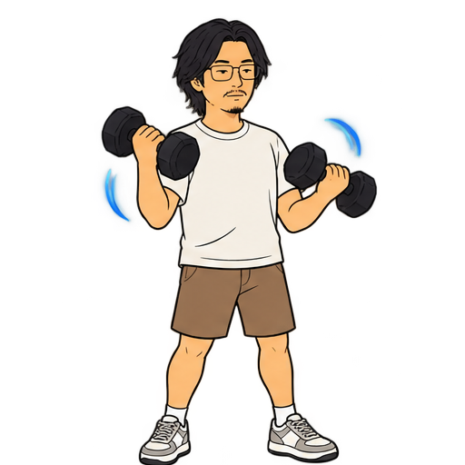

noahchou / about
Noah Chou
also found as NoahIsARider
Undergraduate at SCUT, Guangzhou — major in Software Engineering, minor in Business Administration. I build small machines — web apps, AI experiments, interfaces that argue back — and I read, watch and listen more than is reasonable. pick a self below ↓

—
—
click a self to open its doors